01钩子 / 问题
一句话给出输入与最终产物
开场不解释 Agent，而是直接说‘扔一篇文章，就能一键生成科普短视频’，把输入成本和结果同时说清。
把文章或文件交给视频 Agent，并说明视频类型，就能得到包含画面、文案、配音和字幕的完整成片。
这条内容的收藏/点赞达到1.72、分享/点赞0.36，说明看见的人有明显保存与转发意图；但点赞仍停在中位附近。结构上它几乎全是‘能力承诺+单次演示’，工具名、入口和可控性不足。
把文章或文件交给视频 Agent，并说明视频类型，就能得到包含画面、文案、配音和字幕的完整成片。
不是复述内容，而是标出每一段承担的叙事任务、观众问题和画面证据。
开场不解释 Agent，而是直接说‘扔一篇文章，就能一键生成科普短视频’，把输入成本和结果同时说清。
她将其定义为全球首个视频 Agent，并把使用门槛压缩为说一句话、上传文章或文件。此处强化省事，但没有交代工具名。
上传一篇 Labubu 文章并要求生成商业科普视频，随后逐项展示画面、文案、配音、字幕和包装，证明它交付的是成片而不是脚本。
结尾把用途扩展到科普和新闻快讯，并播放一段最终旁白，最后说产品已向所有人开放。评论仍追问地址，说明行动路径没有闭环。
下列章节覆盖视频的主要论点、步骤与结果；每段都保留时间码和关键画面。
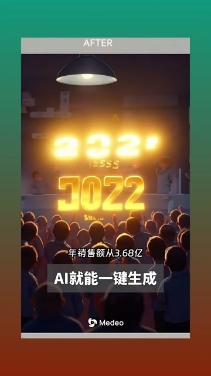
开场不解释 Agent，而是直接说‘扔一篇文章，就能一键生成科普短视频’，把输入成本和结果同时说清。
她将其定义为全球首个视频 Agent，并把使用门槛压缩为说一句话、上传文章或文件。此处强化省事，但没有交代工具名。
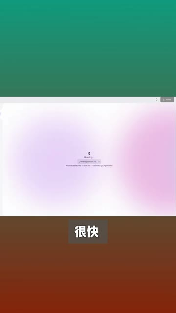
上传一篇 Labubu 文章并要求生成商业科普视频，随后逐项展示画面、文案、配音、字幕和包装，证明它交付的是成片而不是脚本。
结尾把用途扩展到科普和新闻快讯，并播放一段最终旁白，最后说产品已向所有人开放。评论仍追问地址，说明行动路径没有闭环。
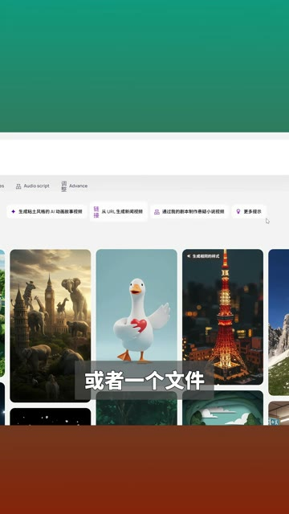
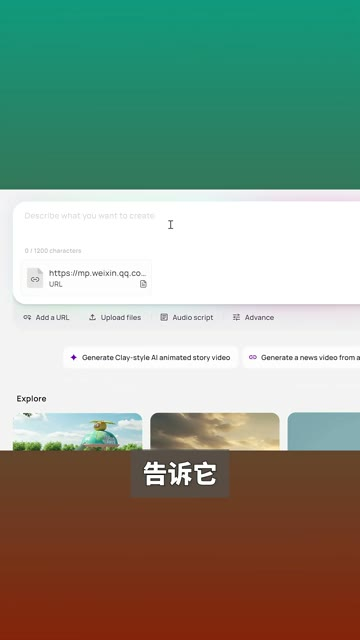
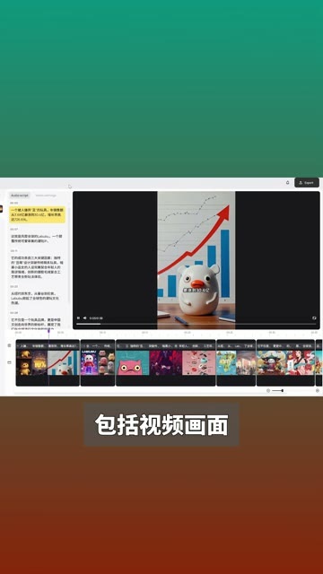
短视频每 1 秒、常规视频每 2 秒、超长视频每 3 秒取一帧。
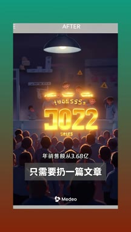
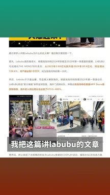
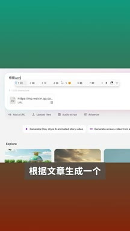
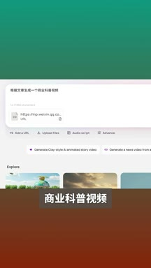
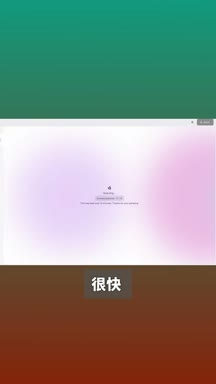
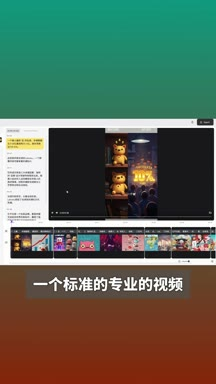
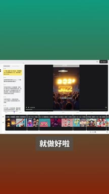
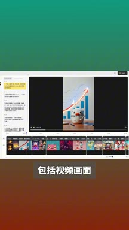
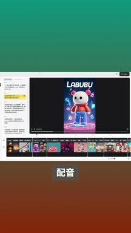
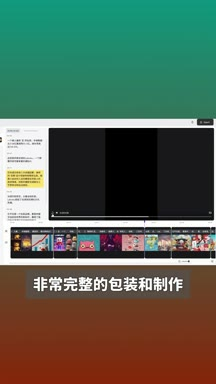
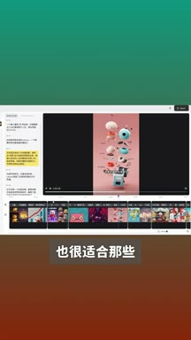
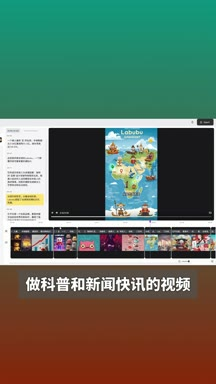
小红书官方 zh-CN 字幕 · 9 段 · 232 字。字幕只记录声音；工具名、界面文字和结果含义必须结合上方视觉知识地图复核。
只需要扔一篇文章，Ai就能一键生成科普短视频
这就是全球首个视频agent强大的能力，你现在不需要剪视频，只需要说一句话
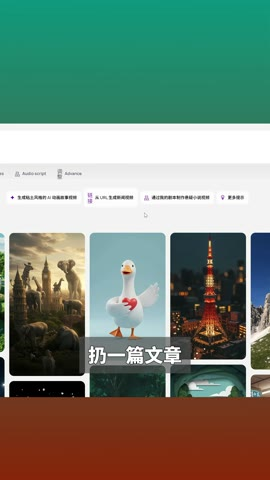
扔一篇文章或者一个文件
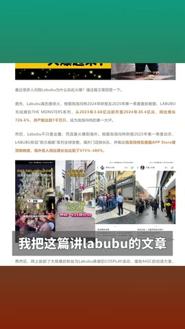
就能得到一个完整的视频，比如我把这篇讲拉布布的文章拖进去
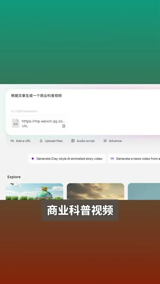
告诉他根据文章生成一个商业科普视频，很快一个标准的专业视频就做好了
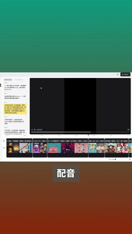
包括视频画面，文案，配音字幕，非常完整的包装和制作
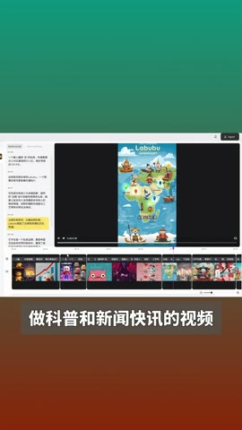
也很适合那些做科普和新闻快讯的视频，从纽约到东京
从曼谷到伦敦，Labubu掀起了全球性的潮玩文化热潮
目前这个agent已经向所有人开放，朋友们快去体验吧
视频只展示一个成功案例，未说明工具名称、入口、费用、生成耗时、素材版权和修改能力。中位点赞不能推导产品效果或账号转化。
打开小红书原帖 ↗